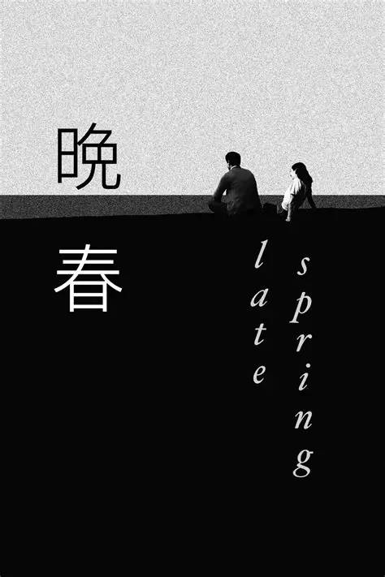

Buddhist films often focus on the human struggle with suffering, attachment, and the search for inner peace. Rather than emphasizing miracles or divine intervention, they highlight the mind, consciousness, and ethical living.

While not explicitly about Buddhism, Yasujiro Ozu’s Late Spring beautifully captures the Buddhist themes of impermanence, non-attachment, and acceptance of change. The film teaches viewers to appreciate the present moment and to accept the natural cycles of life.
ZEN is a meditative film that follows a Buddhist monk’s journey toward inner peace and enlightenment.